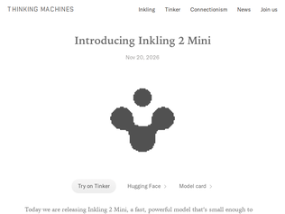
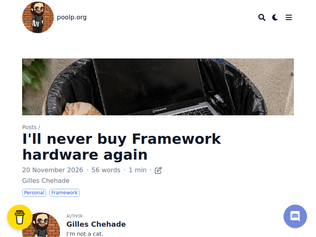
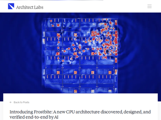
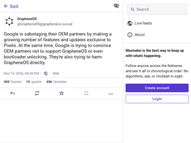
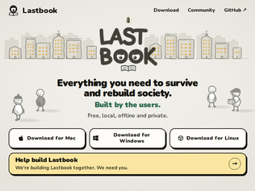

"These proofs really are quite huge. The proof is 1.3GB, ~15M lines of code: mkdir -p riemann_proof && cd riemann_proof # fetch parts 01–14 for i in {01..14}; do curl -fSL -o lean.tar.gz.part$i https://alpo.ge/lean.tar.gz.part$i || { echo "failed: part$i"; break; } done # join and decompress (creates ./lean) cat lean.tar.gz.part{01..14} > lean.tar.gz tar xzf lean.tar.gz # size, file count, line counts du -sh lean | cut -f1 | xargs printf '%s on disk (lean folder)\n' find lean -name '*.lean' | wc -l | xargs printf '%s .lean files\n' find lean -name '*.lean' -print0 | xargs -0 cat | wc -l | xargs printf '%s lines total\n' find lean -name '*.lean' -print0 | xargs -0 cat | grep -cv '^[[:space:]]*$' | xargs printf '%s non-blank lines\n'"
"Shared it in the other thread too.Here’s a link to an interview with Levent Alpöge (in Turkish) from 2014, when he just graduated from Harvard at the top of his class.He mentions solving the Riemann hypothesis is his life goal and he wants to work on it, but he’s not sure if it can be done in his lifetime. Way to go :)https://videonuz.ensonhaber.com/izle/harvard-birincisi-leven..."
"That was fast. I thought we’d have more time.I wonder if we’ll have room temp superconductors and fusion this time next year.If this holds up it seems as good a day as any to call the end of one time and beginning of another.I wish I could be fully happy about this new era instead of worrying if I’ll be alive in 5 years or not. If there was any time for Anthropic to try to coordinate a pause, it feels like now or never, they seem to have a pretty strong lead at the moment. But probably they won’t and can’t, and we will just put the fate of our species to a coin flip."
"While ago, there used to be a world where a person, with large enough brain capacity, could earn a living simply by being smart. That is no more the case. Earning your living by intellectual endeavour will require an access to a machine which is not controlled by you, not controlled by the government representing you, but rather a group of very rich individuals who may just decide to bar your access. Perhaps you attempted something they do not approve, perhaps it was just a mistake. In any case, it is hard to claim that you still have control."
"The manuscript claims he has been working on this problem for 12 years. I can only imagine the feelings that must have hit him when he saw the Anthropic announcement. Though if he believed he had solved it, he must have known it was only a matter of time until one of the AI companies found it, too.A hurried announcement with the draft published within hours is the only way to claim a tie to the discovery. Time will tell if either holds up under further analysis, but at least he has shown his hand to the world with a timestamp on it now."
"Is it possible that brian conrad somehow uploaded the proof to anthropic to cross check something and then the anthropic guys got the proof?- it doesn't have to be the full proof - even if portions were uploaded, that should also be enough or at least calls for a thorough check on ants side. the human proof has been in the works for 12 years, who knows when something was uploaded somewhere or some info just stayed on a google drive which was later sold."

"This is bonkers good if these benchmarks hold up in real-world scenarios. To be at the level of Qwen3.8-27B with a looped transformer model is quite the flex. They just left this note on reddit:Hope that folks find this model more amenable to local usage - the sizing was largely informed by what folks on this subreddit ask for the most haha!There are two particularly interesting aspects of this model for local users:We do our training end-to-end in nvfp4, and although we haven't exhaustively benchmarked this, folks like Unsloth have noticed that our models seem to respond very well to being quantized, maintaining 90% top-1 even at at 1-bit quantization.This model is looped, which allows more depth at the same parameter count, which we particularly notice seems helpful for coding tasks. :)This is our first model targeted at local users, so let us know how this model is and anything you want to see out of future iterations!https://www.reddit.com/r/LocalLLaMA/comments/1y1diuk/thinkin..."
"Seems pretty promising in a few quick coding tests. 27 tokens/s decode on Ryzen 395 and llama.cpp Vulkan. Besides the obvious unmerged PRs (32694, 32657, 32429, 32704) you'll want below tiny patch for about 30% speed boost.Also, if anyone from the team is reading, if you have access for researchers I'd be interested in doing some higher volume tests & harness tuning than I have hardware for personally. --- a/src/llama-graph.cpp +++ b/src/llama-graph.cpp @@ -2670,10 +2670,12 @@ ggml_tensor \* llm_graph_context::build_moe_ffn( const float beta = hparams.situ_beta; const float lb = hparams.situ_linear_beta; - ggml_tensor \* act = ggml_scale(ctx0, ggml_tanh(ctx0, ggml_scale(ctx0, cur, 1.0f/beta)), beta); + // gate/up are strided views of the fused gate_up output; ggml-vulkan's SCALE + // needs a contiguous src, so without the cont both scales fall back to the CPU + ggml_tensor \* act = ggml_scale(ctx0, ggml_tanh(ctx0, ggml_scale(ctx0, ggml_cont(ctx0, cur), 1.0f/beta)), beta); act = ggml_mul(ctx0, act, ggml_sigmoid(ctx0, cur)); if (lb > 0.0f) { - up = ggml_scale(ctx0, ggml_tanh(ctx0, ggml_scale(ctx0, up, 1.0f/lb)), lb); + up = ggml_scale(ctx0, ggml_tanh(ctx0, ggml_scale(ctx0, ggml_cont(ctx0, up), 1.0f/lb)), lb); } cur = ggml_mul(ctx0, act, up); cb(cur, "ffn_moe_situ", il);"
"Whoa, not just a model that acknowledges and embraces using a looped architecture (GPT Astra 6+ and Sol 6.1+ are only [heavily] rumored to be looped), but it's open weights, too?I'm willing to wager that most open models will go looped in the wake of this.Wonder what it means for safety and interpretability at this level of availability."

"I’m digging into this with the team, along with comments in this post. Longevity has to include a streamlined and effective support experience in addition to the hardware being repairable.There are several changes we made earlier this year to drastically shorten the number of back-and-forths to issuing replacement parts when submitting a support request, and we’re working to streamline that further. We’re also improving the RMA->quality->engineering pipeline to make sure we capture learnings and make fixes from field failures."
"Three months ago, we had https://news.ycombinator.com/item?id=49345220. Framework bricked my laptop with a recommended BIOS update and said it wasn't their problem because warranty ended, and that I had to buy a whole new motherboard from their store. This feels like the same treatment. I had to figure out how to fix it myself without any help from Framework.After it got to the front page of HN, Framework promised action when asked by Ars Technica. Three months later, people are still getting their laptops bricked and writing about it on their forums, and the promised fix to add BIOS flash recovery and making bricking impossible still hasn't been released...People have been complaining about Framework's support practices for years and even their investor (Linus Sebastian) has done "secret shopper" on their laptops and run into issues, and the response has always been "we'll do better." I am just not seeing the improvements.I want there to be a good repairable laptop, but the company has to follow through on their promises and treat their customers right."
"> ENODRAMA. Move along, there’s nothing to see here anymore.I'm seeing this behaviour pattern more and more recently and I find it extremely annoying. I don't remember people doing this, i. e. 5 or 10 years ago.Why don't I deserve to know about Framework's support failure just because I opened the link a bit later?Why did you spend time and effort writing the article if you don't actually want people to read it?Also, it is simply impossible to make something a little bit public. The link [0] to the web archive is already in the comments. You can either share something with a specific selected group of people, or with everyone. You can't open the gate a little [1], you are just being annoying for the sake of being annoying but you don't actually achieve anything with this stunt.[0] https://web.archive.org/web/20261120160728/https://poolp.org...[1] https://knowyourmeme.com/memes/open-the-gate"
"I think this idea is often misunderstood and used as an excuse by people who don’t want to make any effort to understand a complex concept and want to blame the results of their laziness on the explanation or the explainer.There are things where you may be given an explanation in simple terms, but the concept requires effort on the part of the recipient of the explanation to really understand. I’ll give an example: compactness. Probably anyone who has done analysis is familiar with how this concept is usually taught. Typically how it goes is you do open and closed sets and then they hit you with “a set is compact if and only if every open cover has a finite subcover”. Now this definition is extremely profound but very dense and it’s highly non-obvious why that in particular is the property you want (a finite subcover for every open cover)[1], how you could go about proving that every possible open cover in a certain situation could have a finite subcover etc etc.In this case it’s actually quite easy to give simple explanations of the separate parts of the definition (open and closed sets, what an open cover therefore means, what a finite subcover then is etc) but actually understanding the concept of compactness requires something above and beyond whatever explanation you are given: it requires the reader to get out pencil and paper, try out some sets, go for some walks, think about it in the bath etc.You may get a really fantastic explanation in simple terms from someone who deeply understands the topic, but if you don’t put in the effort you’re not going to understand it yourself. That’s not the fault of the explanation. It’s not an easy concept to grasp so you have to climb the ladder of understanding. The explainer can’t do that for you.[1] it took the mathematical community years to settle on this being the definition, so you shouldn’t expect to understand why this is the definition straight away."
"The article is just a bunch of quotes from Richard Feynman and John Gruber. There is little insight and I even think the article is misrepresenting the quotes.Feynman said "if you can't explain it on a freshmen level". Leaving out that qualifier distorts the statement.The other quote about the magnets is also overly reductive. Saying "I don't understand it in terms you're more familiar with" is not an admission that scientists as a group don't understand it at all.You could go into what it means to understand something, but unfortunately the article isn't doing that."
"Explain to what level? E.g some topics common here. How do you explain NP in simple terms? "Things that are hard to compute?" That's simple, but not much of an explanation. It leaves the listener with a practically useless definition. And how do you explain even something practical as Heartbleed or Rowhammer? Etc.And then there's another barrier, of course: the audience. You may use simple terms, and tell a lengthy story, but some things are hard to understand. Relativity and Monty Hall come to mind. They can be explained in simple terms, but how many people get them? Probably just the ones that also understand a detailed explanation."

"Wow, I posted this and come back a few hours later, and the comments are... a bit depressing honestly.Do people here know what interaction nets are? They are a fundamentally different programming paradigm, different from the most basic harvard architecture of the 1940s. Whether you think this particular implementation will genuinely support them, and whether that will bring the performance they claim it does, it another question (I'm not sure). But at least can we focus on the topic?https://en.wikipedia.org/wiki/Interaction_nets"
"I am interested to have end products with really good UX driven by peak performance and optimizations which blows my mind because it’s so well perfected as humans weren’t part of its process.As of now, I don’t see any of that being the goals even let alone the result. Instead what I see is that everyone is in a race to have as much product out as possible by the same standards that applied to products made by humans, but even lesser quality.I the last two decades we have gotten so used to average or less than average product quality that we are willing to pay 2000$ for a device running an operating system like macOS or windows that ‘works most of the time’.I hope we have products thanks to AI that compete on reliability of software and hardware to the point that the big tech will have to reinvent their processes just to be able to justify prices."
"The title is a bit misleading—humans came up with all the insights and innovations here. What AI has done, which it is exceptionally good at, is take decades of brilliant ideas buried in research literature and synthesize them into a coherently engineered product. It would seem that AI is now doing an end-run around the innovator’s dilemma, or at least part of it, by dramatically lowering the R&D cost of productizing laboratory ideas."
"I found the Machine Gods interview with Meredith Whittaker really interesting. She specifically talked about this issue of AI apps having too much access on users’ devices and that Signal is struggling to prevent these apps from getting access to users’ Signal chats. And that even if you don’t have an AI app installed, your contact could and thereby still leaks your chat.Good to see they’re making some progress towards addressing this issue and that they are “cautiously optimistic that some major OS providers, like Google and Apple, are engaging with us on how these systems should better interface with privacy-sensitive apps like Signal.”"
"I wish they would go one step further and alert every user of such a system that it contains spyware, and then recommend alternatives like GrapheneOS or Linux for desktop computers. Relying on Apps that meant to remain private to prevent screenshots from being taken won’t work in the long run. Users need to regain control over their operating system."
"I would appreciate if Signal published the findings of their 'forensics investigation' so that other app developers with fewer resources could profit. If it were something like a living document (wiki or repo), there could even be collaboration, where others share their findings."
"One unintended side effect of the removal of sulfur from shipping fuels is a drastic reduction in cloud cover over the ocean. This is estimated to have doubled global warming in the 2020s (!).I’m exploring how to cleanly re-create those lost clouds over the ocean. Fuel additives, spraying sea salt into clouds, modifying ship routing. If this is up your alley hit reply."
"One of the easiest wins would be outlawing burning bunker fuel for recreational purposes, would it not? I'm not posing this as absolute truth but I don't see any direct limitations to personal freedoms. Let cruise operators burn something less ridiculously dirty and if that prices cruising out of the market, so be it."
"At this point I don't see why cruise ships are still allowed, I say ban them. They are super polluting, dangerous for spreading disease and many more problems (bad treatment of the staff, a role in human trafficking, tax evasion). They are completely optional, they exist purely for entertainment/excess.If humanity agreed to stop all cruise ships we would safe more pollution then any other measure we are forced to make currently (which could still be done in addition). To me the fact that cruise ships are still operating proves that most governments are not interested in actually improving climate pollution.To me it seems like the lowest hanging fruit in the climate disaster."

"Find your state attorney general [1]. Write them a letter. Calmly and dispassionately ask that they look into this from an antitrust perspective. Include a copy of this GrapheneOS thread.GrapheneOS, on its side, should publish a template letter for every state. They should also consider releasing evidence for Google "repeatedly reaching out to OEMs to question whether they're working with us and threaten[ing] them" [2].[1] https://www.naag.org/find-my-ag/[2] https://grapheneos.social/@GrapheneOS/117645917131936200"
"This was the year for me, and developer verification was the hill. I started moving all my important emails, images, etc off Google. I can't do it all or all at once, but I made a new email account and started moving things.I bought a new phone, GrapheneOS is on it now. I started moving things there one by one.I got a home server and started self hosting my images and my docs.You don't need to "do it all" just do some, it feels great."
"Keep fighting the good fight. GrapheneOS has been a breath of fresh air the past several years and I really don't want to go back to manual rooting/debloating/hardening."

"I think the key is actually to practice everything. I can't say for everyone, but as someone who is very bad at physical labour, I can't do a lot of the things that handymen consider to be trivial. They basically told me to watch YouTube videos, but those never worked out for me. I need someone to guide me, step by step, AND in the same direction (I get confused if he sits opposite to me because I need to map the actions to my side, which takes a lot of efforts -- this also happened to me when I learnt Karate), AND repeat many times.Right now the only things I'm familiar with DIY is to pry open and destroy the floor of my basement because 1) flooded 3 times, and 2) I didn't need to preserve them anyway. The most advanced thing I ever did (with my father) was to change the battery for my car -- it took more than an hour because we happened to drop a wrench or whatever tool onto the bottom so it took us a lot of time to get it out. I bet for the handymen it's just 10 minutes.This also gives me empathy for people who simply can't do simple things. My wife would never understand that. Fortunately, or unfortunately my son is like me in this aspect, so at least she will learn some empathy."
"There appears to be no way just to download the PDFs. That would be most useful for an eInk device (battery lasts ages, cheap and easy to recharge with solar or a hand-crank).They don't seem to list the information anywhere, either.No mobile version is an oversight. It's easier to power a phone in an emergency than it is to power a laptop or desktop.What a decidedly odd set of choices."
"I think this topic and related explorations are interesting as it pertains to rebuilding communities. We've become increasingly disconnected from what is needed for communities to function and thrive.A related project is Open Source Ecology (terrible name), which aims to make the tools necessary to rebuild society accessible to everyone. Think houses and bulldozers, not hammers...impressive stuff.https://www.opensourceecology.org"
![Preview of 'Levent Alpöge claims proof of the Generalized Riemann Hypothesis [pdf]'](default_50574968.png)
Levent Alpöge claims proof of the Generalized Riemann Hypothesis [pdf]
"These proofs really are quite huge. The proof is 1.3GB, ~15M lines of code: mkdir -p riemann_proof && cd riemann_proof # fetch parts 01–14 for i in {01..14}; do curl -fSL -o lean.tar.gz.part$i https://alpo.ge/lean.tar.gz.part$i || { echo "failed: part$i"; break; } done # join and decompress (creates ./lean) cat lean.tar.gz.part{01..14} > lean.tar.gz tar xzf lean.tar.gz # size, file count, line counts du -sh lean | cut -f1 | xargs printf '%s on disk (lean folder)\n' find lean -name '*.lean' | wc -l | xargs printf '%s .lean files\n' find lean -name '*.lean' -print0 | xargs -0 cat | wc -l | xargs printf '%s lines total\n' find lean -name '*.lean' -print0 | xargs -0 cat | grep -cv '^[[:space:]]*$' | xargs printf '%s non-blank lines\n'"
"Shared it in the other thread too.Here’s a link to an interview with Levent Alpöge (in Turkish) from 2014, when he just graduated from Harvard at the top of his class.He mentions solving the Riemann hypothesis is his life goal and he wants to work on it, but he’s not sure if it can be done in his lifetime. Way to go :)https://videonuz.ensonhaber.com/izle/harvard-birincisi-leven..."
"That was fast. I thought we’d have more time.I wonder if we’ll have room temp superconductors and fusion this time next year.If this holds up it seems as good a day as any to call the end of one time and beginning of another.I wish I could be fully happy about this new era instead of worrying if I’ll be alive in 5 years or not. If there was any time for Anthropic to try to coordinate a pause, it feels like now or never, they seem to have a pretty strong lead at the moment. But probably they won’t and can’t, and we will just put the fate of our species to a coin flip."